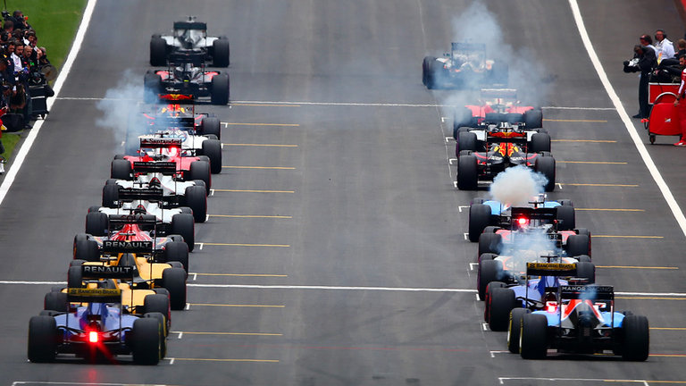
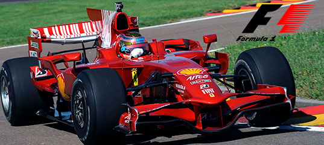

«Формула-1» (повна назва: «Чемпіонат світу ФІА» — англ. FIA Formula One World Championship) — чемпіонат світу з кільцевих автоперегонів на автомобілях з відкритими колесами, який відбувається під егідою Міжнародної Автомобільної Федерації (FIA)[1]. Перш за все «формула» — це термін, який визначає набір правил, які обов'язкові до виконання всіма учасниками перегонів.
Чемпіонат світу у класі «Формула-1» відбувається щороку і складається з Гран-прі, або етапів, які проводяться на спеціально побудованих трасах, або підготовлених вулицях міста. Наприкінці сезону, за підсумками всіх гонок визначається переможець чемпіонату. У Формулі-1 змагаються як окремі пілоти, так і команди. Пілот-переможець отримує титул чемпіона світу, а команда-переможець отримує Кубок конструкторів.
Команди учасники змагань Формули-1 використовують гоночні автомобілі («боліди») власного виробництва. Тому для кожної команди вкрай важливо мати не лише швидкого і стабільного пілота та гарну стратегію, але й надзвичайно сильний конструкторський відділ. Наразі боліди Формули-1 розвивають швидкість до 360 км/год (хоча в останні роки FIA намагалась зменшити швидкість, впроваджуючи нові технічні правила), та здатні витримувати у поворотах перевантаження до 5 g. Кількість обертів двигуна обмежена до 18 000 об/хв., проте слід зазначити, що за всі роки свого існування Формула-1 постійно змінювалася.